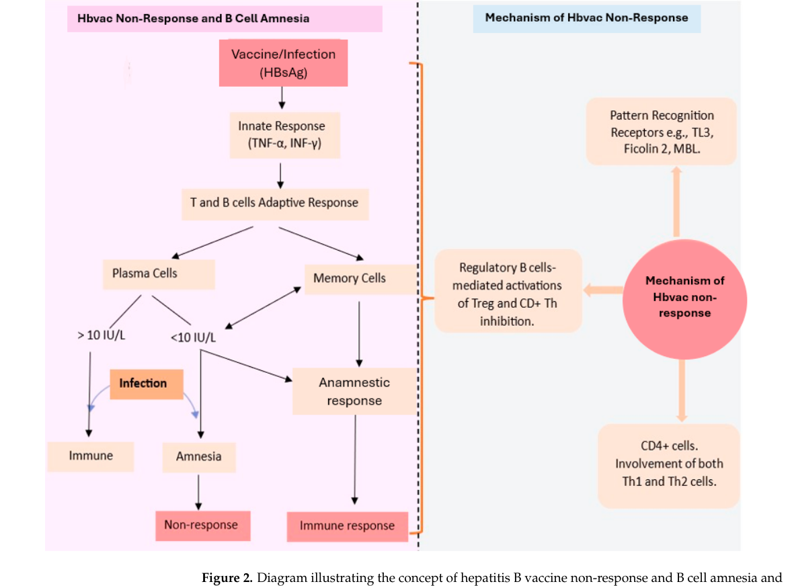
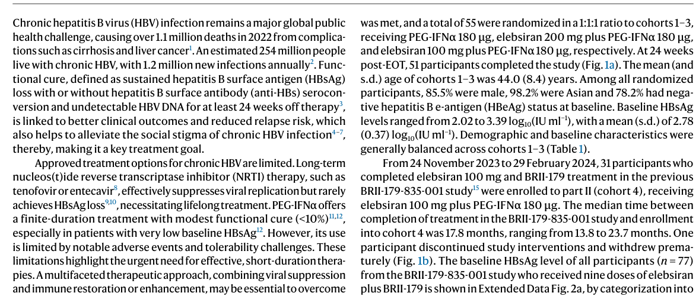
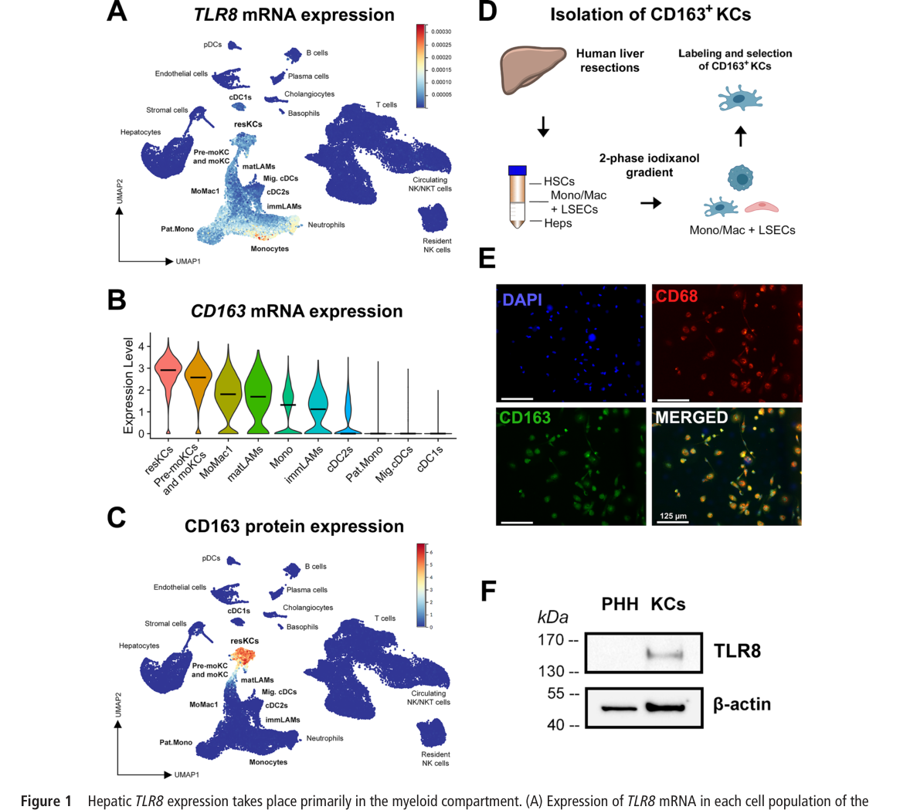

乙肝疫苗深度学习计划 · 阶段三报告
行业瓶颈与未满足的临床需求（附：阶段二待核清单核销表）
编制：Claw ｜ 2026-08-23 ｜ 本报告全部定量数据经PubMed原文摘要/官方注册库核实，逐条标注PMID/NCT
预防端两大瓶颈：①健康成人约5-10%全程接种后无保护性应答（年龄、肥胖、遗传等多因素），老年/免疫抑制人群比例更高；②三针程序的依从性与出生剂量覆盖缺口（全球出生剂量及时率仅46%）。治疗端核心瓶颈：现有任何单药均无法在多数患者实现功能治愈，HBsAg清除率天花板在10-20%（且高度集中于基线HBsAg<100 IU/mL人群）；降抗原容易、免疫重建难。联合治疗已形成明确的设计范式：核酸药压抗原→低基线人群引入免疫干预（疫苗/检查点），主终点趋向“停药导向复合终点”，并按基线HBsAg分层。
健康成人完成全程接种后，约5-10%未能产生保护性抗-HBs（≥10 mIU/mL），称为无应答者（nonresponders）；年龄增长、男性、肥胖、吸烟、饮酒及合并症（糖尿病、慢性肾病、慢性肝病、HCV、HIV、乳糜泻、炎症性肠病）人群中比例显著升高。
[1] Tahir A, et al. A Comprehensive Review of Hepatitis B Vaccine Nonresponse and Associated Risk Factors. Vaccines (Basel). 2024;12(7):710. PMID 39066348（OA全文在手）[5-10%数据已核]
非应答的免疫学本质是一种可再激活的缺陷而非永久无能力：①CD4 T细胞辅助不足与调节性T细胞（Treg）上调→IL-10释放，抑制T/B细胞功能；②模式识别受体与细胞因子通路多态性：TLR2 rs3804100、IL-4 rs2243248、IL-4RA rs1805015、IL-13 rs1295686等SNP与非应答强关联；③B细胞“遗忘症”（B cell amnesia）：生发中心应答不足、记忆B细胞池建立缺陷——再次暴露抗原时无回忆应答；④MHC/HLA单倍型（如乳糜泻人群HLA-DQ2）影响抗原提呈效率。
[2] Bello N, et al. Overview of Hepatitis B Vaccine Non-Response and Associated B Cell Amnesia: A Scoping Review. Pathogens. 2024;13(7):554. PMID 39057781（OA全文在手）[机制图见下]

图1 HBV疫苗非应答与B细胞遗忘机制概览（Bello N, et al. Pathogens 2024;13:554, Figure 2, CC BY）
[3] Akcay IM, et al. Host genetic factors affecting hepatitis B infection outcomes: Insights from GWAS. World J Gastroenterol. 2018;24:3347. PMID 30122875（OA全文在手）
| 策略 | 证据与数据 | 来源 |
|---|---|---|
| 加强复种 | 经典对策：更高剂量或增加剂次复种可使部分无应答者转阳；皮内途径低剂量多次亦有效 | Walayat S, et al. World J Hepatol 2015. PMID 26523203（综述） |
| CpG佐剂两针疫苗 | Heplisav-B（HBsAg+CpG1018，0-1月两针）III期HBV-23：成人两针血清保护率优于对照 | Jackson S, et al. Vaccine 2018;36:668. PMID 29289383 |
| 三抗原疫苗 | PreHevbrio/Sci-B-Vac（S+PreS1+PreS2，0-7-28-168程序）III期PROTECT（N=1607）：≥18岁SPR 91.4% vs 76.5%；≥45岁89.4% vs 73.1%（优效成立）——高龄难应答人群获益最大 | Vesikari T, et al. Lancet Infect Dis 2021;21:1271. PMID 33989539；NCT03393754 |
要点：非应答不是单一人群，而是“免疫背景×疫苗设计”的组合结果——PreS表位扩展与强佐剂（CpG）分别从抗原面与共刺激面修复应答，这正是新表位设计的科学依据（与阶段四衔接）。
| 指标 | 2022年全球水平 | 来源 |
|---|---|---|
| 婴儿三针覆盖率 | 85% | Polaris，PMID 37517414（原文摘要核实） |
| 出生剂量及时率 | 46% | 同上 |
| HBIG联合免疫比例 | 14% | 同上 |
| 高病毒载量孕妇产前抗病毒 | 3% | 同上 |
全球257.5百万HBsAg阳性者中仅36.0百万被诊断、83.3百万符合治疗指征者中仅6.8百万在治（14%/8%）——诊断与治疗级联是比疫苗技术更大的瓶颈。≤5岁儿童感染仍有5.6百万（0.7%），母婴阻断缺口主要在撒哈拉以南非洲与西太平洋地区。
[4] Polaris Observatory Collaborators. Lancet Gastroenterol Hepatol. 2023;8:879-907. PMID 37517414 [全部数字经原文摘要逐条核实]
①两针CpG疫苗（Heplisav-B，1个月完成）——剂次革命的代表；②三抗原疫苗PROTECT采用0-7-28-168程序，早期（day 63前）即出现更高几何平均滴度趋势，利于快速保护【GMC具体数值待核：以PROTECT原文结果段为准】；③在研saRNA/腺病毒序贯方案目标进一步压缩剂次或延长保护（阶段二已综述）。依从性经济学：三针程序在中低收入国家实际完成率低于登记覆盖率，出生剂量+首针联合是最高杠杆点。
①NUC（恩替卡韦/替诺福韦）抑制逆转录但不触及cccDNA与整合DNA，HBsAg清除罕见；②直接抗病毒新药（siRNA/ASO/CAM）能把HBsAg压低1-2个log，但停药后反弹+免疫重建缺位（REEF-1：siRNA+CAM+NA三联48周仅9%达到NA停药标准，反而低于siRNA200mg双药组19%——叠加降抗原无增益）；③免疫调节单药（检查点/TLR）在抗原高载时“扳不动”耐受状态。
[5] Yuen MF, et al. REEF-1. Lancet Gastroenterol Hepatol. 2023;8:790-802. PMID 37442152；NCT03982186 [N=470、六臂、全部百分比经摘要核实]
GS-4774（酵母表达HBsAg/HBcAg/HBx，GlobeImmune/Gilead）+TDF的随机II期：尽管显著增强HBV特异性CD8 T细胞（IFNγ/TNF/IL-2多功能），HBsAg无下降——证明在未压低抗原载量的情况下，单纯“激活T细胞”不足以突破耐受；T细胞质量提升了，但数量与肝脏微环境仍不足以清除感染细胞。该试验成为“先降抗原后免疫”范式的反面教材。
[6] Boni C, et al. Gastroenterology. 2019;157:227-241. PMID 30930022 [数据经摘要核实]
| 试验/药物 | 低基线亚组结果 | 来源 |
|---|---|---|
| ASC22（PD-L1单抗，IIb，N=149） | 基线≤100 IU/mL者3/10实现HBsAg清除；全组1.0mg/kg组均值仅-0.309 log10 | PMID 38976867 [已核] |
| VTP-300±低剂量nivolumab（Ib/IIa，N=55） | HBsAg下降集中于基线<100 IU/mL者；+nivo组均值-0.76~-0.80 log10，2例持续检测不到 | PMID 38972484；NCT04804017 [已核] |
| 停NUC预测（Woodhouse 2022） | 基线与治疗中HBsAg水平是停药后持久应答的最强预测因子 | 阶段一锚点，PMID 35280322 |
三条独立证据线汇聚于同一规律：免疫干预只在HBsAg已被压低的窗口内起效——这决定了联合治疗的时序设计（先降抗原、后免疫）。
| 试验 | 组合 | 人群/设计 | 主要结果 | 来源 |
|---|---|---|---|---|
| B-Clear（IIb） | bepirovirsen 150/300mg±NUC，24周治疗+24周随访 | N=457；3:3:3:1四组；HBeAg+/-、治/未治分层 | 300mg组NA背景9%、无NA背景10%在随访末HBsAg<LOD且维持——迄今最强单药功能治愈证据 | Yuen MF, NEJM 2022;387:1957. PMID 36346079 [已核] |
| REEF-1（IIb） | JNJ-3989 siRNA 40/100/200mg±bersacapavir CAM+NA | N=470；1:1:2:2:2:2六臂；主终点=48周NA停药标准（ALT<3ULN+DNA<LLOQ+HBeAg-+HBsAg<10） | 达标率：siRNA200mg双药19% > 三联9% > 40mg 5%；对照2%；CAM+NA 0%——降抗原叠加无益 | Yuen MF, Lancet GH 2023. PMID 37442152 [已核] |
| Elebsiran+PEG-IFNα（II期） | GalNAc-siRNA+IFN序贯 | 详见原文 | 联合优于siRNA单药（疗效曲线见阶段二图） | Nat Med 2026;32:151. doi:10.1038/s41591-025-04049-z [全文在手] |
| BRII-835+179±IFN（IIa） | siRNA+PreS三抗原VLP疫苗±IFN | 随机对照 | siRNA单药免疫恢复最小；联合组~40%抗-HBs≥100 IU/L≥32周；PreS特异性IL-2 T细胞仅联合组出现 | Ji Y, Gastroenterology 2025. PMID 40043858 [已核] |
| VTP-300+LDN（Ib/IIa） | ChAdOx1/MVA异源加强+低剂量nivolumab | N=55；4组；病毒抑制+HBsAg<4000 IU/mL | VTP-300+nivo（D28给药）组HBsAg均值-0.76~-0.80 log10（p<0.001）；2例HBsAg持续转阴；IFNγ ELISpot与降幅相关 | Tak WY, J Hepatol 2024;81:949. PMID 38972484 [已核] |
| ASC22（IIb） | PD-L1单抗1.0/2.5mg/kg q2w×24周 vs 安慰剂 | N=149；HBeAg-、病毒抑制 | 1.0mg/kg组-0.309 log10（p<0.001）；低基线亚组3/10 HBsAg清除；耐受良好 | Qian J, Hepatology 2025;81:1328. PMID 38976867 [已核] |
①终点复合化：HBsAg<LOD+HBV DNA检测不出+维持24周（B-Clear），或直接用“NUC停药标准”做主终点（REEF-1）；②按基线HBsAg与HBeAg状态分层入组；③时序化：免疫干预排在核酸药压抗原之后（BRII-835→179、elebsiran→IFN）；④剂量探索内嵌（REEF-1三剂量、B-Clear两剂量两背景）；⑤安全性门槛：免疫激活类干预要求无治疗相关SAE（VTP-300达标）；⑥富集低基线人群的伦理与效率优势（ASC22事后亚组、VTP-300基线<100 IU/mL）。

图2 siRNA+PEG-IFNα联合的疗效证据（Nat Med 2026;32:151-159, Fig.2）
selgantolimod（TLR8）临床疗效有限，但机制研究显示其重编程Kupffer细胞、以IL-6依赖方式抑制HBV入胞——提示免疫调节剂即使未达临床终点，仍可能提供“隐藏获益”（降低再感染/再传播），在联合设计里值得作为背景免疫调制层。

图3 TLR8激动剂重编程Kupffer细胞（Gut 2024;73:2012, Figure 1）
[7] Roca Suarez AA, et al. Gut. 2024;73:2012-2022. PMID 38697771（OA全文在手）
| 待核项 | 核销结果 | 状态 |
|---|---|---|
| 出生剂量46% | Polaris原文摘要：85%三针/46%出生剂量/14% HBIG/3%孕妇抗病毒——全部落实 | 已核销 [PMID 37517414] |
| GS-4774 II期数据 | Boni C, Gastroenterology 2019；TDF背景下CD8显著激活但HBsAg无下降 | 已核销 [PMID 30930022] |
| REEF-1 N=260 | 修正：N=470（45/48/93/93/96/95六臂）；阶段二报告该数字有误，以本表为准 | 已核销+勘误 [PMID 37442152] |
| B-Clear约10%（300mg组） | N=457；300mg组：NA背景9%（6/67）、无NA背景10%（7/68）在随访24周末HBsAg<LOD | 已核销 [PMID 36346079] |
| nivolumab HBV I期 | 以VTP-300+低剂量nivolumab（J Hepatol 2024）替代锚定；nivolumab单药原始文献未再引用 | 已核销（替代锚点）[PMID 38972484] |
| ASC22 II期状态 | 已发表IIb期RCT（Hepatology 2025；N=149） | 已核销 [PMID 38976867] |
| inarigivir临床终止 | 存在phase 2文献（Liver Int 2022），但“终止决策”无原始公告来源 | 仍未核销，继续挂账 |
| vebicorvir REEF-2/强生2023退出 | REEF-1全文未含REEF-2；退出决策无公司一手来源 | 仍未核销，继续挂账 |
| Recombivax 1986/CHO 1988批准年份 | 本轮未找到可引用的一手来源（FDA原始批件） | 仍未核销，继续挂账 |
| Heplisav-B批准精确日期 | HBV-23试验已锚定（PMID 29289383），FDA批件精确日期待查fda.gov | 部分核销 |
| PROTECT GMC早期滴度 | SPR数据已核；GMC具体数值待原文结果段 | 部分核销 [PMID 33989539] |
方法论备注：40332208经核实为Shechter O等“Functional Cure for Hepatitis B Virus: Challenges and Achievements”（Int J Mol Sci 2025, OA, PMC12026623）——内部笔记曾误标为Lok Nat Rev Drug Discov，特此更正以防未来误引；该综述实际是阶段三重要参考（REP 2139-Mg/REP2165-Mg+TDF+PEG-IFN 40例中14例功能治愈；HBcrAg<4 log10+anti-HBs>2 log10对持续应答PPV 100%）。
[8] Shechter O, Sausen DG, Dahari H, Vaillant A, et al. Int J Mol Sci. 2025;26(8):3633. PMID 40332208（OA全文在手）
1. 预防端的“技术剩余空间”集中在两点：无应答人群（PreS表位+CpG佐剂路线已被PROTECT/HBV-23验证有效）与超短程序（两针/单针目标）——但该市场由Big Pharma疫苗部门主导，后来者切入点有限，建议仅作技术跟踪。
2. 治疗端的设计语法已定型且可复用：核酸药压抗原→低基线窗口引入免疫干预→复合终点+分层。三段式构想与之完全同构，差异化在第三段的mRNA治疗性疫苗（阶段二论证的专利窗口）。
3. 富集策略（基线HBsAg<100 IU/mL）既是效率工具也是天花板来源——若前段降抗原能力更强（GalNAc-siRNA×2-3轮或+ASO），可把更多患者送入免疫应答窗口，这是递送平台的直接价值。
4. 下一阶段（阶段四）将完成：PreS1/PreS2优势表位与基因型广谱设计、动物模型验证策略（人源化肝脏小鼠优先）、CMC与临床终点路径，并以三段式功能性治愈为题形成正式立项论证。
[1] Tahir A, et al. Vaccines (Basel). 2024;12(7):710. PMID 39066348（非应答风险因素综述，OA）
[2] Bello N, et al. Pathogens. 2024;13(7):554. PMID 39057781（B细胞遗忘综述，OA）
[3] Akcay IM, et al. World J Gastroenterol. 2018;24:3347. PMID 30122875（宿主遗传GWAS综述，OA）
[4] Walayat S, et al. World J Hepatol. 2015;7:2503. PMID 26523203（非应答者再接种策略）
[5] Jackson S, et al. Vaccine. 2018;36:668. PMID 29289383（HBV-23，Heplisav-B）
[6] Vesikari T, et al. Lancet Infect Dis. 2021;21:1271. PMID 33989539（PROTECT III期；NCT03393754）
[7] Polaris Observatory Collaborators. Lancet Gastroenterol Hepatol. 2023;8:879. PMID 37517414（全球负担与覆盖）
[8] Yuen MF, et al. Lancet Gastroenterol Hepatol. 2023;8:790. PMID 37442152（REEF-1；NCT03982186）
[9] Boni C, et al. Gastroenterology. 2019;157:227. PMID 30930022（GS-4774 II期）
[10] Yuen MF, et al. N Engl J Med. 2022;387:1957. PMID 36346079（B-Clear；NCT04449029）
[11] Elebsiran+PEG-IFNα phase 2. Nat Med. 2026;32:151-159. doi:10.1038/s41591-025-04049-z
[12] Ji Y, et al. Gastroenterology. 2025. PMID 40043858（BRII-835×BRII-179 IIa）
[13] Tak WY, et al. J Hepatol. 2024;81:949. PMID 38972484（VTP-300+低剂量nivolumab）
[14] Qian J, et al. Hepatology. 2025;81:1328. PMID 38976867（ASC22 IIb期）
[15] Roca Suarez AA, et al. Gut. 2024;73:2012. PMID 38697771（selgantolimod机制，OA）
[16] Shechter O, et al. Int J Mol Sci. 2025;26:3633. PMID 40332208（功能治愈综述，OA）